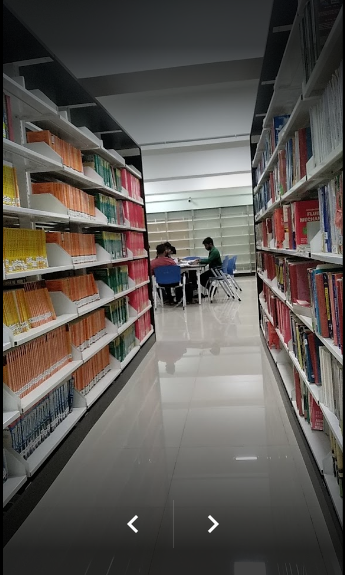
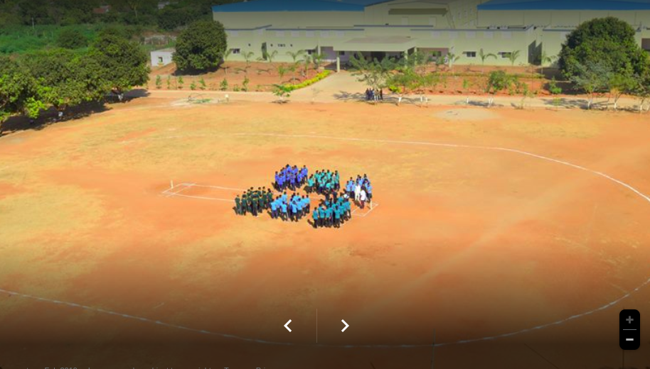
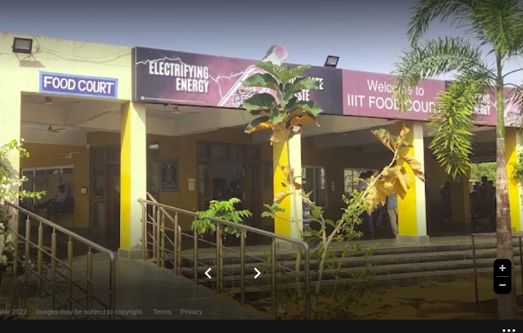
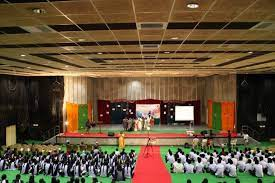

We provide a Collage impact overall learning process as well as the mental and physical growth of the students.

World Class Library
By providing free access to educational, news, and historical resources, libraries help keep the public informed with facts, rather than confused with fiction.

Biggest Play Ground
We are provide safe spaces where students develop crucial physical, social, emotional and imaginative skills necessary to gain self-confidence, improve coordination, and advance critical thinking capabilities.

food court
A wide variety of food is in the offering at the lowest rates and keeps student pretty pleased.The canteen is seen as the hub of all activities with students who get to break free from routine life to have a quick bite of food.

SAC-AUDITORIUM
auditorium(SAC), the part of a public building where an audience sits, as distinct from the stage, the area on which the performance or other object of the audience's attention is presented.